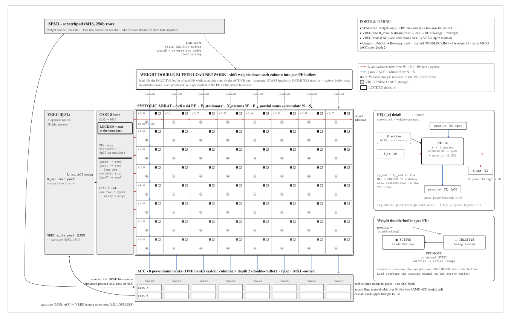
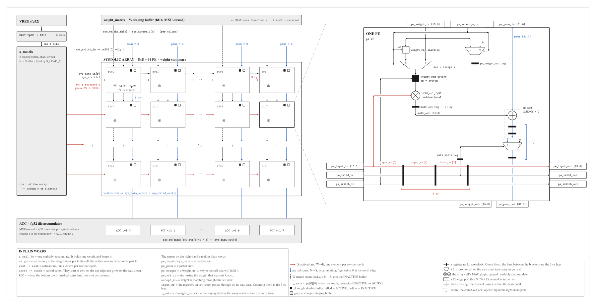
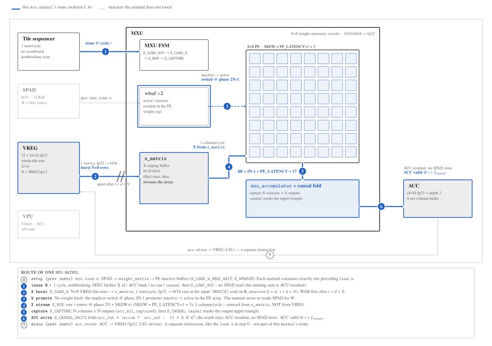
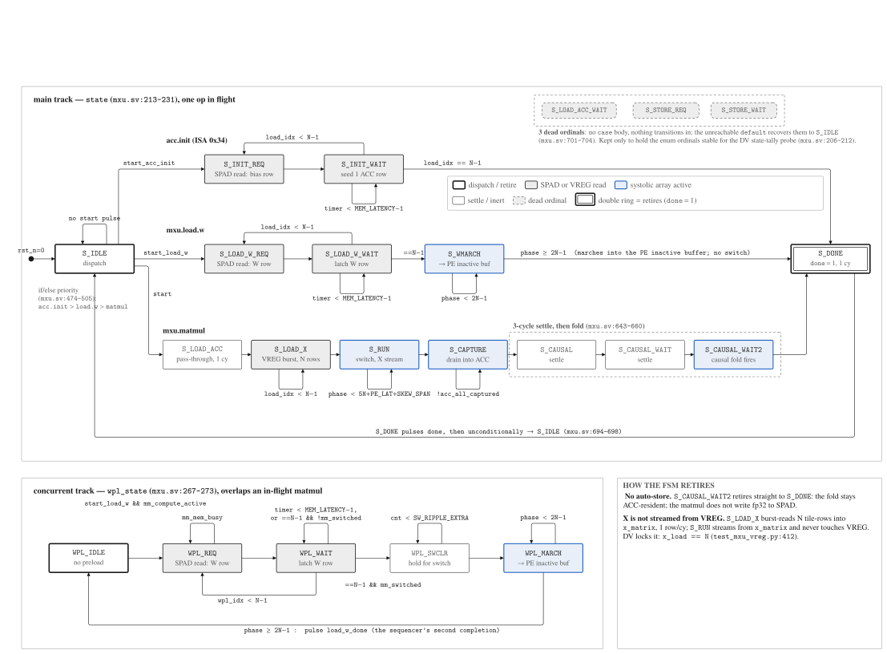
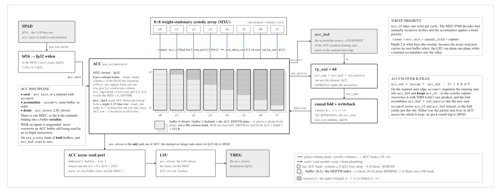

MXU: The Systolic Matrix Engine¶
The MXU is the matrix-multiply engine of the compute tile: an N×N weight-stationary systolic array of multiply-accumulate processing elements, wrapped by an FSM that streams operand tiles in and out of the scratchpad. It implements two ISA ops in the 0x0_ matmul group --- mxu.load.w (0x00), which loads an N× N weight tile into the next (inactive) weight buffer, and mxu.matmul (0x01), which implicitly switches the loaded weights to active, streams the activation tile through the array, and accumulates into the ACC register file. Each op runs the DIM×DIM tile loop internally so a kernel issues one mxu.load.w + mxu.matmul pair per weight tile. Splitting weight load from compute is what lets the compiler preload the next tile's weights while the current tile still computes (§ the tile loop). This document is the visual deep-dive; the exhaustive specifics (every FSM state, the synthesizable FP bit-arithmetic) live in the RTL.
Numbers are owned by config, not by this page. All sizes below are cited to npu/src/npu/npu_config_pkg.sv (the generated config package, itself derived from npu/params.py). For this build: N = 8 ⇒ 8×8 = 64 PEs, MEM_LATENCY = 2, DATA_WIDTH = 32 (FP32 accumulate / psum bus), and storage width STORAGE_WIDTH = 16 (BF16). Opcode semantics are cited to mininpu/isa.
Where the MXU sits¶

Fig. 1.mininpu MXU datapath. Weight-stationary systolic array (RS-hybrid: W stationary, X row-streamed) · N=8 → 8×8 = 64 PE · bf16×bf16→fp32 MAC · ACC = 8 per-column banks × depth 2 (fp32) · X streamed from VREG (cast at boundary, LOCKED) · N=8 baseline; datapath parameterized (N=16 = ISA-invariant sweep).
The MXU is one of two datapath engines inside the compute tile (the other is the VPU). The tile sequencer fetches an mxu.load.w / mxu.matmul pair from IRAM, latches the operand base addresses and the flag bits, then pulses start. Under the 0.5.0 model the MXU sources its weights from SPAD (mxu.load.w) and its X tile from VREG (burst-staged into x_matrix), pushes them through the array, captures the FP32 results into ACC, and pulses done. The tile result drains from ACC (via the LSU's acc.store); the MXU does not store results back to SPAD. The SPAD port structure it shares with the DMU is SPAD Fig. 1 --- note that figure is as-built-grounded and still draws an MXU-to-SPAD writeback path; that is an RTL-wiring artifact, not the 0.5.0 datapath this page documents.
The systolic-array concept¶

Fig. 2.mininpu MXU: the systolic array and one PE. Zoom hierarchy, one subject at
two altitudes: the 8×8 = 64 PE weight-stationary array, and the inside of one of its
PEs · X is burst-staged into x_matrix and streamed from there, never from VREG · the
partial sum is injected as 0 at the north edge, not supplied from outside · the
fp32 → bf16 cast of X sits at the array input, not inside the PE · one PE hop is
SKEW = PE_LATENCY+1 = 3 cycles, equal W→E and N→S.
A systolic array computes a matrix product by laying out a grid of identical multiply-accumulate cells (PEs) and letting operands flow through the grid in lockstep with the clock --- each PE does one multiply and one add per cycle, passing its inputs onward to its neighbours. No PE ever fetches from memory; the array is a pure dataflow pipeline fed at its edges. mininpu's array is weight-stationary: a tile of weights is loaded once and held in each PE, then a stream of activations marches across, accumulating partial sums as it goes. This is what gives the array its efficiency over a vector unit: a single activation read feeds an entire row of PEs as it streams across (spatial reuse), and each stationary weight is reused by every activation that passes through its PE (temporal reuse), rather than each operand being read once per multiply.
Concretely (from npu/src/compute_tile/systolic.sv): activations flow west → east, one stream per array row (sys_data_in[r]); weights and partial sums flow north → south, one column each (sys_weight_in[c]), with the bottom row driving the outputs; valid follows the activations west→east, accept_w is a per-column broadcast, and the switch propagates from pe[0\]\[0] rightward along row 0, then south down each column.
A worked example --- one column accumulates¶

Fig. 3.Tracing one mxu.matmul. The route of a single mxu.matmul across the
compute tile · everything off the route is receded · X is BURST-read (N=8 rows,
1 row/cycle) into x_matrix; VREG is then not read again for the rest of the matmul.
To make the dataflow concrete, take a single column of the array as a dot-product reducer. Each PE holds one weight w; the activation x passing through it is multiplied, and the incoming partial sum from the PE above (psum_in) is added: codepsum_out = w· x + codepsum_in. The top PE starts from codepsum_in = 0, so by the time the value reaches the bottom of the column it is the full dot product of that column's weights with the activation vector. In the figure, column 0 holds weights 0.5,0.25,-0.5 and the activations are 1.0,2.0,1.0, so the partial sums step 0.5→1.0→0.5 … rolling up to the FP32 result. Every multiply widens to an FP32 product and every add is FP32, so a long reduction chain never loses dynamic range. The same thing happens in all N columns simultaneously, one cycle apart --- that is the systolic wavefront shown next.
The systolic wavefront --- row-stagger timing¶

Fig. 4.MXU controller FSM. mxu.sv:213-231 declares 17 enum ordinals;
14 are reachable and 3 are dead. One op in flight on the main track, plus one
concurrent weight-preload sub-FSM. Every state also names what it does on its own
second line.

Fig. 5.Accumulator bank structure and read-bank select. ACC is 8 per-column banks of fp32, depth 2. The read-bank select is registered (#260) to close the 200 MHz path.
The word "systolic" refers to the staggered timing. Activations are not injected into every row on the same cycle; row r starts one cycle after row r-1. This row-stagger means a given activation reaches PE (r,c) exactly when the partial sum descending column c reaches the same cell --- multiply and accumulate line up without any PE waiting on memory. The result is a diagonal wavefront: at cycle t, the active PEs are those on the anti-diagonal r + c = t. PE (0,0) fires first; PE (codeN-1,codeN-1) fires last, 2(codeN-1) cycles later. The bottom-row outputs therefore stream out column-by-column rather than all at once, which is why the controller's S_CAPTURE state collects each column's result as its valid fires. The controller paces the whole run for 5N + PE_LAT phases (see the tile-loop table).
Deeper dive: the systolic-pipeline timing pitfall
From the RTL pitfall taxonomy. Systolic pipeline timing: the row-stagger and the
per-PE valid delay must match across the whole PE array --- an activation and its
descending partial sum have to arrive at each cell on the same cycle, so any mismatch
between the injection stagger and the pipeline latency corrupts the wavefront silently
(no assertion fires; the numbers are just wrong). Capture-valid is delayed one cycle to
compensate for pe_valid_out leading pe_psum_out. The class lives in the taxonomy on
the compute-tile overview; the exact warning is an inline comment in
systolic.sv / pe.sv.
Inside a PE --- the multi-precision MAC¶
Each PE (npu/src/compute_tile/pe.sv) is a single multiply-accumulate cell with two weight registers, an active and a next (inactive) buffer. mxu.load.w streams a weight tile into the inactive buffer with no compute and no switch; the subsequent mxu.matmul implicitly promotes it (the switch signal swaps active/inactive in one cycle) and streams activations. Because the two buffers are disjoint, the next tile's mxu.load.w can run concurrently with the current tile's mxu.matmul compute --- this is the ISA-level cross-tile weight preload (§ the tile loop). The arithmetic is two stages: a storage-format multiplier feeds an FP32 accumulator.
The west activation and the active weight register multiply (bf16_mul_fp32, combinational) into an FP32 product, which latches in mult_out_reg --- the explicit pipeline register that cuts the DSP→CARRY8 path. fp_add then adds the FP32 psum_in arriving from the north; the FP32 mac_out becomes the psum_out driven south to the PE below. The activation passes through east; weights also forward south.
The multiplier widens the low-precision operands directly into a FP32 product, and accumulation is always FP32 (ACCUM_WIDTH = 32, cited npu_config_pkg.sv). That is the standard "low-precision-multiply / wide-accumulate" shape: it keeps the dynamic range of long reduction chains without paying for FP32 multipliers. BF16 is the storage format rather than FP16 because it keeps FP32's full 8-bit exponent range, so it does not overflow at the magnitudes GEMM operands and activations reach; FP16's 5-bit exponent (max ≈ 65504) would saturate to infinity at those magnitudes. FP16 spends the bits it saves on exponent range on mantissa precision instead, so the BF16-vs-FP16 choice trades dynamic range for mantissa precision. In v1 the storage dtype is hardwired BF16 (multiply) with FP32 accumulate; the runtime dtype field is removed from the v1 encoding, so flags[7:6] is now reserved (must be zero), parked and re-claimable without a reformat (e.g. a future fp8 dtype) (cited mininpu/isa). One DSP48E2 maps per PE on FPGA. The multiplier is combinational and fp_add contributes PE_LATENCY stages; with PE_LATENCY = 0 the controller budgets PE_LAT = 2·PE_LATENCY + 1 = 1 extra cycle for the explicit mult_out_reg register. pe_valid_out is one cycle ahead of pe_psum_out by design; the controller delays its capture-valid by one cycle to compensate. The fp_add each PE accumulates with is the same primitive the VPU lanes are built from, drawn internally in VPU Fig. 2; only the number and placement of pipeline flops differs between the two consumers.
Table: PE two-stage arithmetic: BF16 storage multiply widens to FP32; accumulation is always FP32. v1 STORAGE_FORMAT = BF16, ACCUM_FORMAT = FP32.
| Stage | Result | Module (v1, STORAGE_FORMAT = BF16) |
|---|---|---|
| multiply | STORAGE × STORAGE → FP32 product | bf16_mul_fp32 |
| accumulate | product + incoming psum → FP32 MAC | fp_add at ACCUM_FORMAT = "FP32" |
Deeper dive: PE_LATENCY drives the FSM wait states
From the RTL pitfall taxonomy. Fixed- vs floating-point latency: the PE MAC latency
is not a constant --- the combinational multiplier plus the registered fp_add give a
PE_LATENCY that the controller must budget into its wait states (PE_LAT =
2*PE_LATENCY + 1). The LATENCY / PE_LATENCY parameters drive the FSM's phase
counts; changing the FP pipeline depth (e.g. to close 200 MHz) shifts the capture
window, so sim and synth must agree on the value. The class is in the taxonomy on the
compute-tile overview.
The tile accumulator: the MXU's second FP32 stage¶
Multiplication is BF16, but every accumulate in the MXU is FP32, and there are two of them. The first is intrinsic to the array: each PE widens its BF16×BF16 product to an FP32 product and adds the FP32 psum_in descending its column (the fp_add at npu/src/compute_tile/pe.sv lines 97--109), so the dot product reduces in FP32 down each column. The second is the tile accumulator: the FP32 stage that receives the whole tile's captured result and adds it onto the tile already sitting in the scratchpad when the accumulate flag is set. It is what lets a K-loop sum partial tiles into one output without ever leaving FP32.
In the RTL today the tile accumulator lives inline in npu/src/compute_tile/mxu.sv (lines 69--90): the captured systolic result in out_matrix, the prior ACC tile prefetched into acc_buf (the S_LOAD_ACC phase), and the per-element ACC_ADD generate array of fp_add units at ACCUM_FORMAT that forms acc_sum = acc_buf + out_matrix. This tile accumulator is one of the system's two FP32 domains; the other is the entire VPU (see the VPU doc). Together they are why a long GPT-2 GEMM K-loop keeps its dynamic range.
A clean extraction candidate¶
The tile accumulator is self-contained (out_matrix, acc_buf, the ACC_ADD array, and the causal/accumulate fold), so it is a clean, behavior-preserving candidate for lifting into a named mxu_accumulator submodule: a future DV-gated refactor(rtl,mxu) that would not change a single output bit. The per-PE psum accumulator, by contrast, cannot be lifted out: it is intrinsic to the systolic array, physically distributed one fp_add per PE and wired into the north-south psum chain.
Table: The MXU's two FP32 accumulate points. Multiply is BF16; both accumulates are FP32 (ACCUM_FORMAT = FP32). Only the tile accumulator is a submodule-extraction candidate.
| Accumulate | What / where | Extractable? |
|---|---|---|
| Per-PE psum | FP32 dot-product reduction down each column, one fp_add per PE (pe.sv 97--109) |
No: intrinsic to the array |
| Tile accumulator | FP32 fold of the captured tile onto the prior ACC tile; out_matrix + acc_buf + ACC_ADD fp_add array, inline in mxu.sv 69--90 |
Yes: clean mxu_accumulator candidate |
The tile loop¶
The 0x0_ matmul group hides the DIM×DIM tile loop: hardware "implements the DIM×DIM tile loop internally" so arbitrary M×K and K×N products are decomposed into array-sized tiles by the controller, not by the kernel (cited mininpu/isa). At the ISA level the tile splits across two instructions: mxu.load.w loads the N weight rows (from SPAD) into the inactive weight buffer (its own opcode, no compute, no switch), and mxu.matmul implicitly switches, streams the N activation rows (X, sourced from VREG), and accumulates into ACC --- the result stays in ACC and drains via the LSU, with no store-back to SPAD. This split is what makes cross-tile weight preload real at the ISA level: the next tile's mxu.load.w is overlap-capable with the current mxu.matmul (§ the double-buffer schedule below). The FSM-phase table below traces one tile end-to-end; in the current RTL the weight-load phase is still folded into the single controller pass, so this ISA-level split is the ratified design and its exact RTL realization (a distinct mxu.load.w dispatch) is tracked separately. Each SPAD read is paced by MEM_LATENCY = 2 cycles:
Table: MXU controller FSM phases for one matmul tile (mxu.load.w + mxu.matmul). Each SPAD read is paced by MEM_LATENCY cycles.
| Phase | FSM states | What happens |
|---|---|---|
Load W (mxu.load.w) |
S_LOAD_W_REQ,WAIT |
Read N weight rows into the inactive weight buffer. trans_b reverses the row-fetch order. Its own ISA op; overlap-capable with the prior tile's compute. |
| Load ACC | S_LOAD_ACC{,_WAIT} |
If accum, prefetch the N output rows (fp32) from ACC into acc_buf so results add onto them. |
| Load X | S_LOAD_X_REQ,WAIT |
Burst-read N activation rows (X, from VREG) into x_matrix. |
| Run | S_RUN |
Stream weights into the array (reverse order so the switch lands each weight in its PE), fire switch at phase 2N-1, then stagger the X rows in. Runs 5N + PE_LAT phases. |
| Capture | S_CAPTURE |
Collect FP32 outputs from the bottom row as each column's valid fires, into out_matrix. |
| Causal / accum. | S_CAUSAL{,_WAIT} |
If causal, mask the upper triangle to -INF (0xFF800000); fold in the accumulate sum. The result stays in ACC; S_DONE pulses done. |
The mxu.sv enum still declares SPAD-store states (S_STORE_REQ/WAIT) from an earlier design that wrote the tile result back to SPAD; they are among the dead ordinals (Fig. 4 above) and are unreachable in the current control path, so they are not documented here as a live phase.
The flag bits are split across the two ops (cited mininpu/isa): on mxu.load.w, flags[0] = transB (reverse the weight-row fetch); on mxu.matmul, flags[0] = accum (fold onto the prior ACC tile) and flags[1] = causal (mask the upper triangle). The dtype field flags[7:6] is reserved-must-be-zero in v1 (BF16 is hardwired). The matrix-level meaning --- acc_dst = (accum ? acc_dst : 0) + spm_x @ (transB ? spm_w^{}T : spm_w), with the post-multiply causal mask --- is specified normatively in mininpu/isa; this page does not restate it.
Double-buffer schedule¶
A K-loop issues load.w W0; matmul X0; load.w W1; matmul X1 (accum); ...: each load.w W(k+1), issued after matmul Xk's switch, runs concurrently with the Xk compute because the active and inactive weight buffers are disjoint. This is real v1 overlap defined by nonblocking instruction semantics (mxu.load.w and mxu.matmul are both nonblocking; see the compute-tile concurrency model), not a hardware-opportunistic reorder.
Operand layout in SPAD¶
The controller addresses three N-row regions in the scratchpad: weight rows and activation rows are bf16 (STORAGE_WIDTH = 16), output rows are fp32; each SPAD row is the full SPAD_DATA_WIDTH = 256-bit bus (8 × DATA_WIDTH). Base addresses arrive as base_addr_w / base_addr_x / base_addr_out, latched on start.
Source map¶
The MXU spans three RTL files plus the two SSOT sources for its constants and semantics:
Table: MXU source files and their roles. Sizes, widths, and formats are owned by npu_config_pkg.sv; opcode semantics by mininpu/isa.
| File | Role |
|---|---|
npu/src/compute_tile/mxu.sv |
Controller: 14-state load/run/capture/store FSM, SPAD addressing, trans_b/accumulate/causal handling, array glue. |
npu/src/compute_tile/systolic.sv |
The DIM×DIM (= N) PE grid: edge wiring, activation/weight/psum/switch routing, bottom-row output packing. |
npu/src/compute_tile/pe.sv |
Single PE: multi-precision multiplier + FP32 accumulate, double-buffered weight registers, control delay lines. |
npu/src/npu/npu_config_pkg.sv |
Config SSOT: N, MEM_LATENCY, DATA_WIDTH, PE_LATENCY, STORAGE_/ACCUM_FORMAT (generated from npu/params.py). |
mininpu/isa |
ISA SSOT: mxu.load.w (0x00) + mxu.matmul (0x01) semantics + flag bits (flags[7:6] reserved-must-be-zero, BF16 hardwired in v1). |
See also: compute-tile overview (the tile that hosts the MXU + VPU), VPU (the vector engine), and uncore (device-level composition). RTL specifics live in npu/src/compute_tile/{mxu,systolic,pe}.sv.
Workload note¶
GPT-2 BF16 forward-pass GEMMs are the v1 worked example that exercises this engine, not the MXU's definition. FPGA is the test platform.